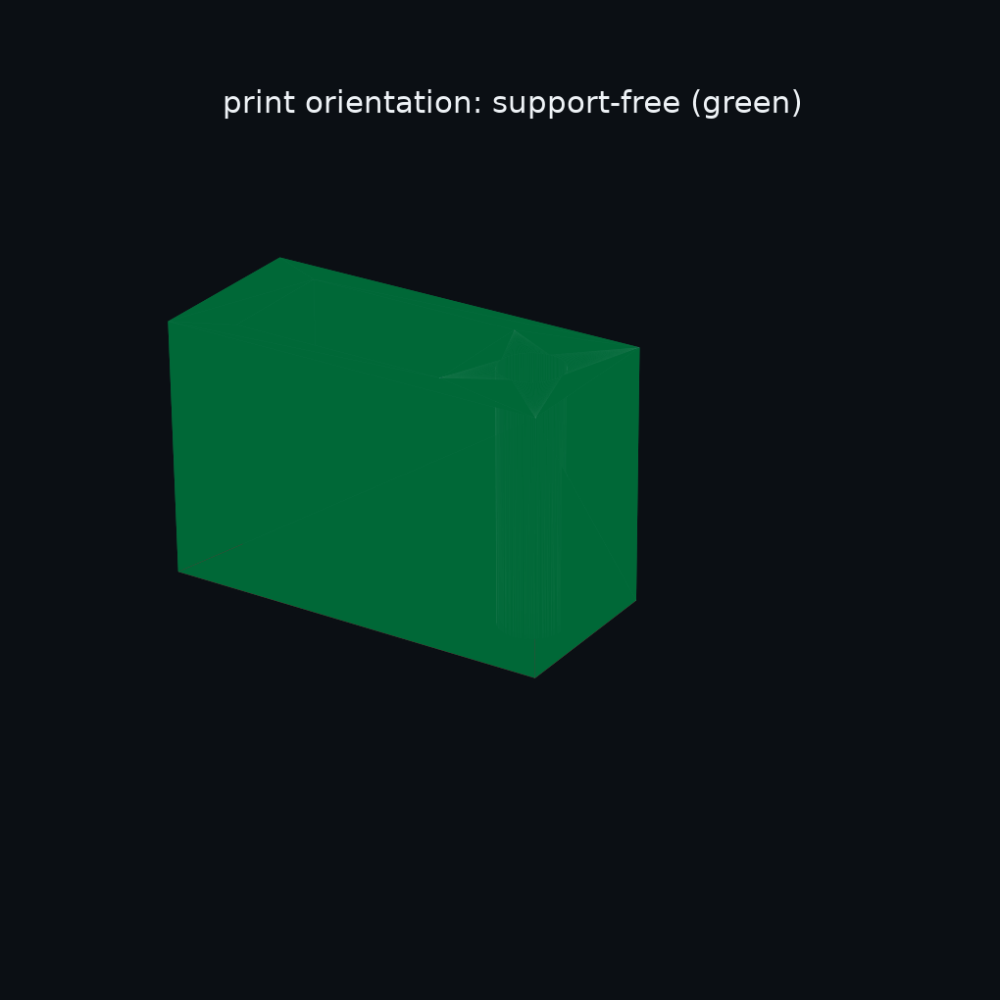
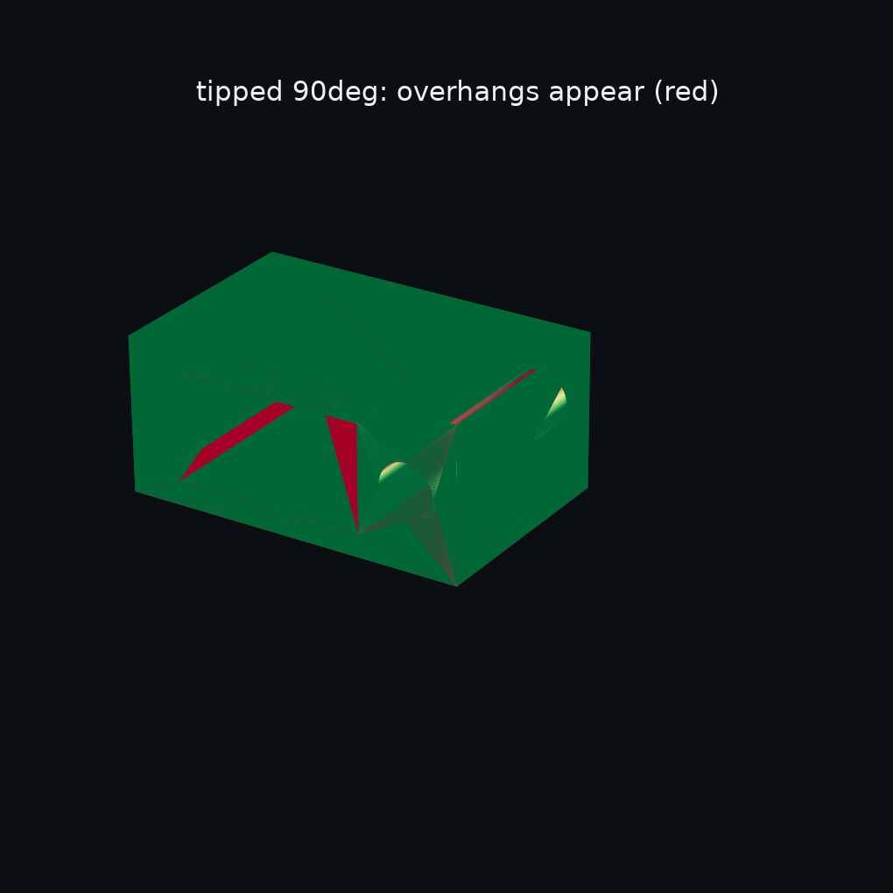
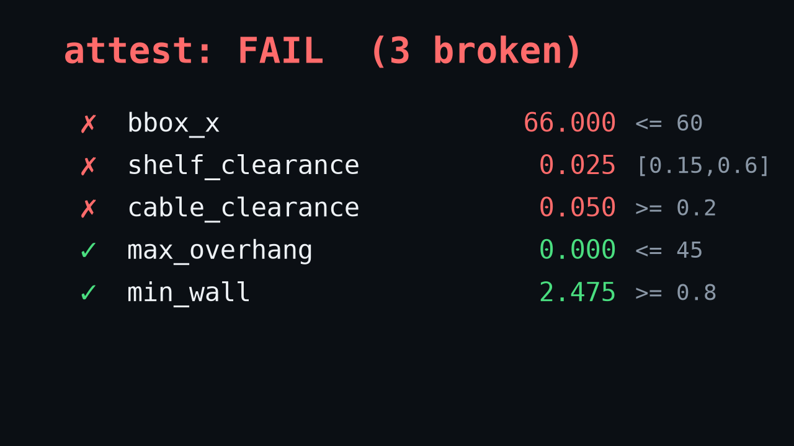
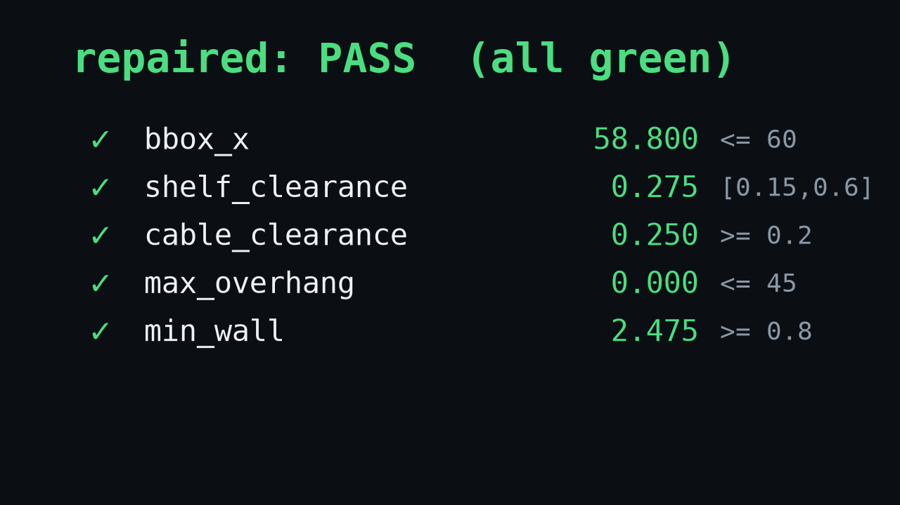
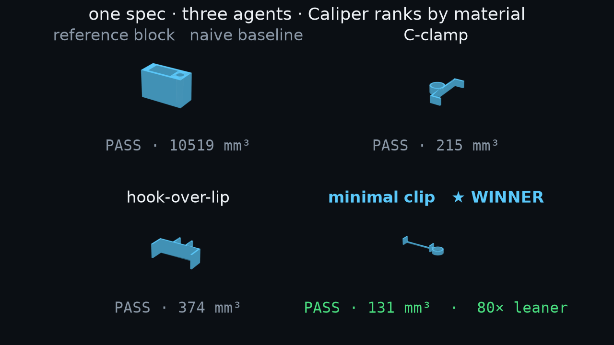
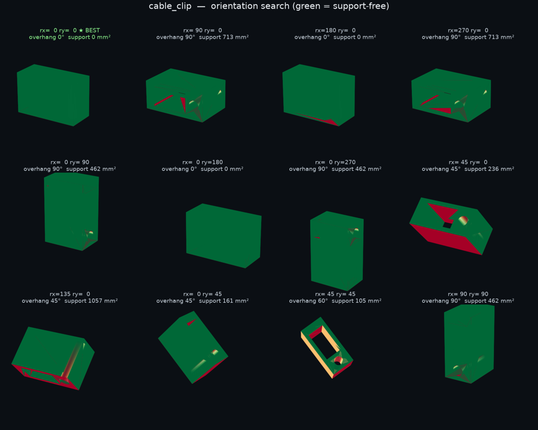
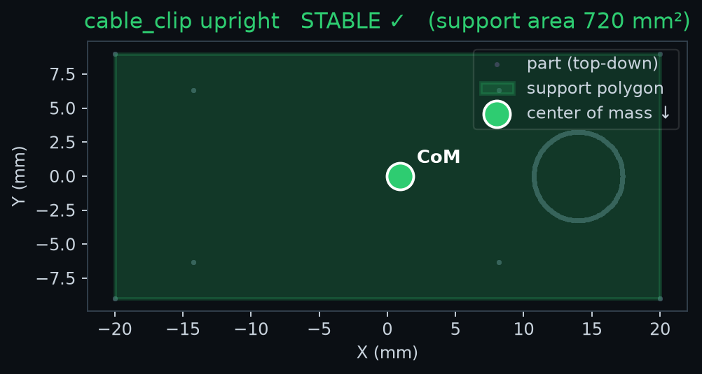
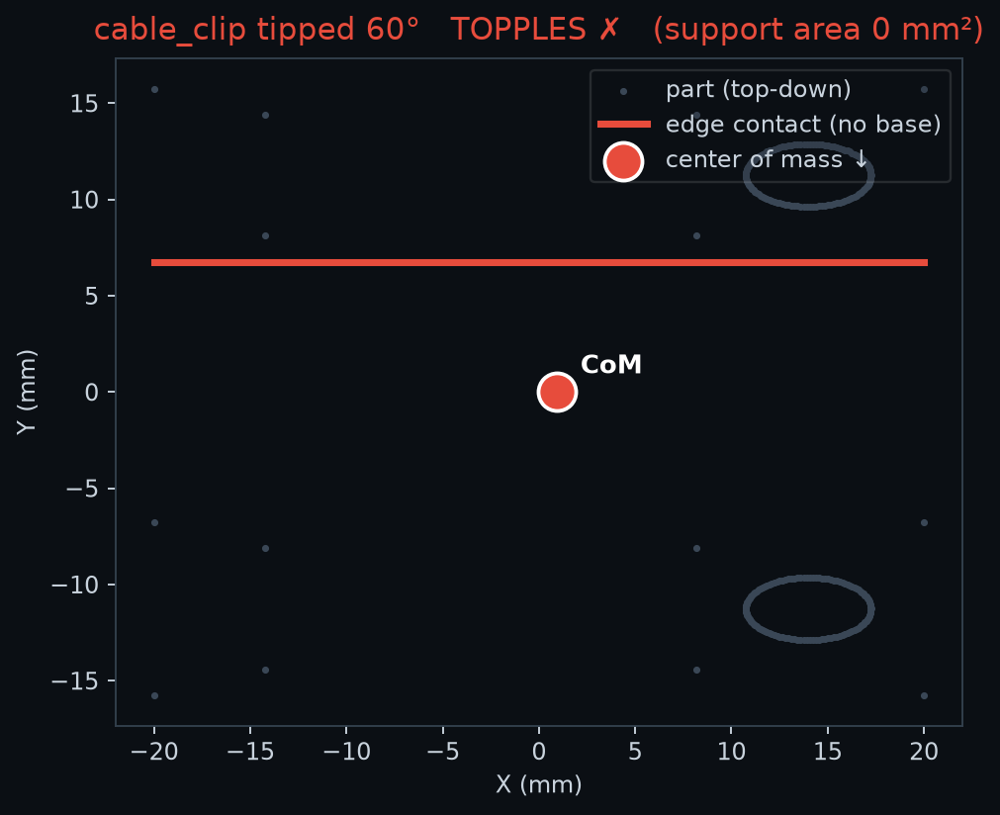

Partsmith
Generative CAD, with a gate. Agents forge the part; Caliper proves it passes the fit & printability checks — before it ships.
Describe a part. Claude Code agents forge it in build123d. Caliper gates it on real geometry — overhang, wall, fit — so what ships passes its checks, not just looks right. The proven first pillar of physics-verified CAD.


A part isn't done when it looks right
It's done when it passes.
Generative tools happily hand you a mesh. Caliper won't ship one until it clears a suite of checks measured off the real geometry — overhang, wall, real-world fit, build‑plate. A failing check names the defect; the loop repairs exactly that and re-checks until every line is green.


One spec. Three agents. Caliper judges.
Hand the same brief to three Claude Code agents and they solve it three different ways. Caliper scores all three against the same checks and ranks by material — the leanest design that actually passes wins.
Spec
Designing
Verifying
Ranked ★

Numbers gate. Pictures inform.
See it, don't just measure it.
A scalar says max_overhang = 0°. A picture says where. Caliper renders its analysis as fields an agent's vision encoder reads in one glance — turning a pass/fail number into a spatial instruction for the next redesign.



Proven today. Building next.
Geometry is the gate we've shipped. Physics is the gate we're building — the same architecture, richer fields.
| ✅ Proven today · runs green in the repo | 🔜 Building next · same architecture |
|---|---|
| Caliper gates generated parts on real geometry — overhang, wall, fit, plate | Structural & flow verification (FEA / CFD) — the same gate, physics fields |
| Red→green auto-repair; optimize to the leanest passing part | Live agent-in-the-loop generation — the race wired continuously |
| Three agents race one spec; Caliper ranks the winner | Agent-readable heat-map fields driving the redesign directly |
The 60 seconds.
The whole loop, honest and end-to-end — a broken clip repaired red→green, the optimizer cutting material a third while every check holds, three agents raced, a verified part and its measured passport.
Honest scope. Caliper is a geometric printability & fit gate — the proven first pillar of a physics stack, not a claim of physical-function proof. Clearance is exact (OpenCascade); overhang is a per-face angle; min-wall is a sampled ray-cast, stable across 400→20 000 samples. Retention and FEA/CFD are roadmap. Full methodology & limitations live in the repo README — where the number stays the incorruptible gate and the picture stays advisory.